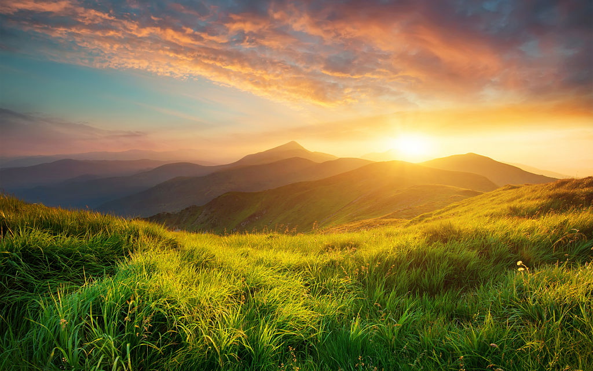
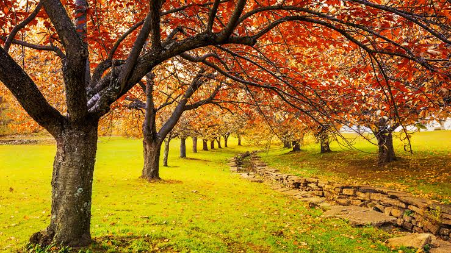
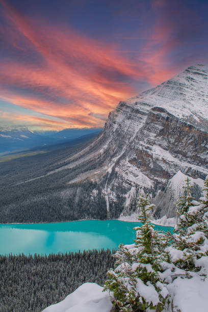

01
Mbaji pastër hapësirat
Mos i hidh mbeturinat në rrugë, parqe apo pyje. Përdor koshat dhe ndihmo në mbajtjen e mjedisit pastër.
E ARDHMJA ËSHTË NË DUART TONA
Mbrojtja e natyrës fillon me veprimet tona të përditshme. Nuk nevojiten gjëra të mëdha për të bërë një ndryshim.
Mëso si të ndihmoshPSE KA RËNDËSI?

Ajri që thithim, uji që pimë dhe ushqimi që hamë varen nga një mjedis i shëndetshëm.
Ndotja, prerja e pyjeve dhe mbeturinat dëmtojnë ekosistemet dhe rrezikojnë shumë gjallesa. Prandaj, secili prej nesh mund të kontribuojë duke bërë zgjedhje më të përgjegjshme.
FILLON ME NE
Disa zakone të thjeshta që mund t'i zbatojmë çdo ditë.

Mos i hidh mbeturinat në rrugë, parqe apo pyje. Përdor koshat dhe ndihmo në mbajtjen e mjedisit pastër.

Fike dritën kur nuk të nevojitet dhe mos e lër ujin të rrjedhë pa arsye. Çdo kursim ka rëndësi.
Pemët ofrojnë strehë për kafshët dhe ndihmojnë në përmirësimin e cilësisë së ajrit.